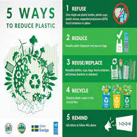

Tackling the global plastic crisis requires a multi-faceted approach, beginning with conscious choices at the individual level. The foundation of this effort is the widely recognized mantra of the 3 R’s: Reduce, Reuse, and Recycle. First, we must Reduce our consumption of single-use plastics, which are the primary culprits of plastic pollution. This means making a deliberate effort to avoid products packaged in unnecessary plastic, carrying reusable shopping bags instead of accepting plastic ones, and choosing items with minimal packaging. Simple behavioral changes, such as using a refillable water bottle or a reusable coffee cup, can significantly cut down on the demand for single-use plastic. Next, we must Reuse plastic items whenever possible to extend their lifespan and prevent them from entering the waste stream prematurely. For instance, plastic food containers can be used for storage, and plastic bags can be repurposed for other chores before disposal. This practice conserves energy and resources that would have otherwise been used to produce new plastic products. Finally, Recycling plays a crucial role, but it must be done correctly. We need to understand local recycling guidelines, sort our waste properly, and ensure that only clean plastic goes into the recycling bin. Supporting recycling initiatives and facilities, even if it requires extra effort, is essential for a more circular economy where plastic waste is turned into valuable new materials. By embracing these three principles in our daily lives, each individual can become an active participant in mitigating the plastic crisis and contributing to a healthier planet. This shift in mindset and habit is a powerful starting point for a larger, more impactful movement.
Beyond individual actions, systemic and policy-based solutions are critical for driving large-scale change and holding industries accountable. Governments and international bodies have a vital role in implementing effective policies that discourage plastic production and encourage sustainable alternatives. This can include enforcing bans on single-use plastics, such as straws, cutlery, and bags, which have a high environmental cost for their short-term use. Additionally, implementing a plastic tax or extended producer responsibility (EPR) schemes can incentivize manufacturers to use less plastic and to take responsibility for the entire lifecycle of their products, from design to disposal. For these policies to be effective, significant investment is needed in modern waste management infrastructure, including advanced sorting facilities and recycling plants that can handle different types of plastics efficiently. Corporations must also be held accountable and shift their business models towards a circular economy, where products are designed to be durable, reusable, or easily recyclable, thereby minimizing waste. This requires a fundamental redesign of packaging and supply chains. By working together, governments and corporations can create a framework that makes sustainable choices not just a personal preference but a societal norm, ensuring that the burden of plastic waste management is shared and not left solely to consumers or developing nations with limited resources. These large-scale interventions are necessary to create a sustainable future that is not dependent on the endless production of virgin plastic.
To truly overcome the plastic crisis, we must also embrace technological innovation and prioritize education to change public behavior. Scientists and researchers are continuously working on groundbreaking solutions, such as developing new materials like bioplastics and biodegradable alternatives made from sustainable resources like cornstarch or sugarcane. These materials have the potential to replace conventional plastics in many applications, as they can break down harmlessly in the environment. Furthermore, advancements in chemical recycling and plastic-to-fuel technologies are providing new ways to process plastics that are difficult to recycle, turning them into valuable resources and preventing them from ending up in landfills or oceans. Parallel to these technological advancements, public education and awareness campaigns are crucial. People need to understand the full lifecycle of plastic, its harmful effects on human health and the environment, and the importance of their choices. Educational initiatives in schools and communities can empower the next generation with the knowledge to make informed decisions and become advocates for change. Supporting organizations and industries that are committed to these sustainable innovations and educational efforts is a powerful way for individuals to contribute to a larger solution. Ultimately, a combination of personal responsibility, strong policy, and cutting-edge technology, all underpinned by a well-informed public, is the only way to effectively reduce plastic's devastating impact and build a cleaner, healthier future for everyone.
